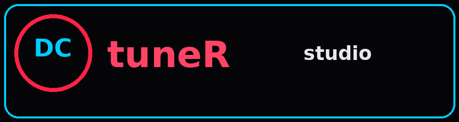
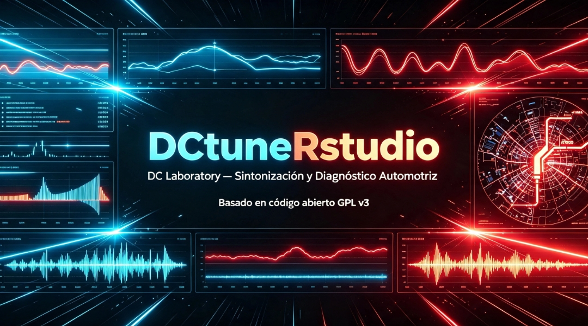
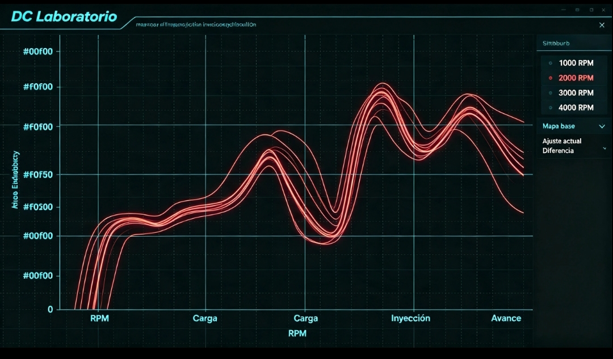
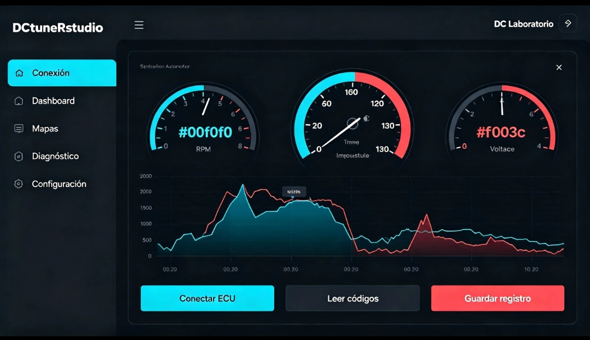
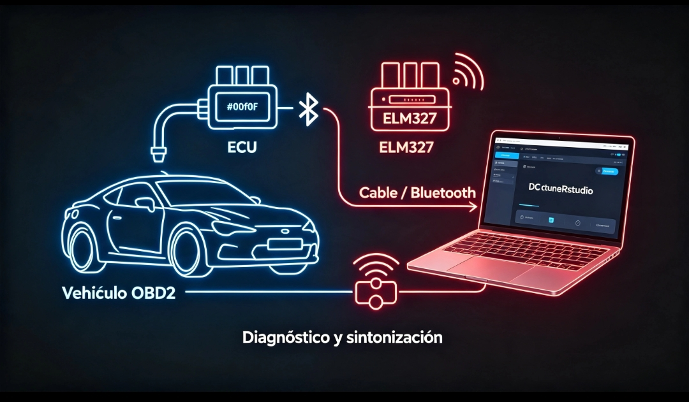

01 / 04▥
Datos en vivo
Observa sensores, RPM y parámetros críticos con gráficas que responden al momento.
Ver panel ↗
DC LABORATORY / RELEASE 1.0
Diagnóstico, conexión y sintonización automotriz con una interfaz creada para leer lo importante al instante.

BUILT FOR THE GARAGE
Una consola clara para entender qué ocurre bajo el capó, sin ruido visual y sin esconder los datos que importan.
Observa sensores, RPM y parámetros críticos con gráficas que responden al momento.
Ver panel ↗Trabaja sobre tablas y calibraciones con lectura clara por celda.
USB o Bluetooth mediante ELM327, sin pasos innecesarios.
Transparente, extensible y respaldado por código abierto GPL v3.
Saber más ↗INSTALL YOUR WAY
Elige el entorno que ya tienes. Cada versión incluye el runtime o las instrucciones necesarias para comenzar sin fricción.
La consola completa para cualquier sistema con Java 17 o superior.
Linux · Windows · macOS · Raspberry PiDescargar JAR ↗Instalador nativo. Descarga, instala y empieza a conectar.
Runtime incluido · Acceso directo en inicioDescargar EXE ↗Paquete para distribuciones basadas en Debian, listo para instalar.
Runtime incluido · Comando: dctunerstudioDescargar DEB ↗Conecta tu adaptador ELM327 y usa la Pi como centro de diagnóstico.
Raspberry Pi OS 64-bit · Bookworm · BullseyeDescargar ARM64 DEB ↗Experiencia nativa para tu Mac, con todo listo en una imagen.
Apple Silicon e Intel · Arrastra a AplicacionesDescargar DMG ↗Abre el panel desde celular, tablet, PC o Raspberry Pi. Sin instalar.
HTML estático y responsive · Incluye galería y portadaDescargar web ↗SMALL COMPUTER / BIG CONTROL
Raspberry Pi + ELM327 + DCtuneRstudio. Un setup compacto para llevar datos reales donde los necesitas.
Configurar Raspberry Pi ↓INSIDE THE CONSOLE



BEFORE YOU CONNECT
Lo esencial antes de elegir tu plataforma.
Elige el instalador nativo de tu sistema si quieres evitar instalar Java. El JAR universal funciona en cualquier equipo con Java 17 o superior.
La release oficial está compilada para ARM64 y funciona en Raspberry Pi 3, 4 y 5 con Raspberry Pi OS de 64 bits, Bookworm o Bullseye.
Un adaptador ELM327 compatible por USB o Bluetooth. La comunicación depende del adaptador, la ECU y la configuración de tu vehículo.
Sí. El proyecto conserva la licencia GPL v3 y mantiene los créditos de rusEFI en el menú Acerca de.